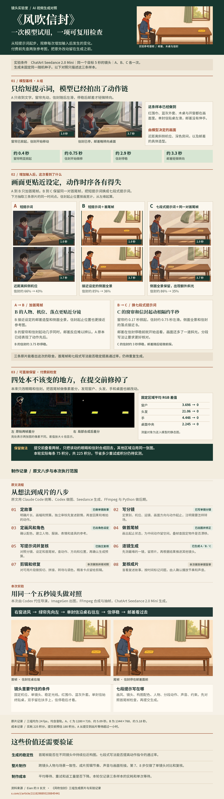
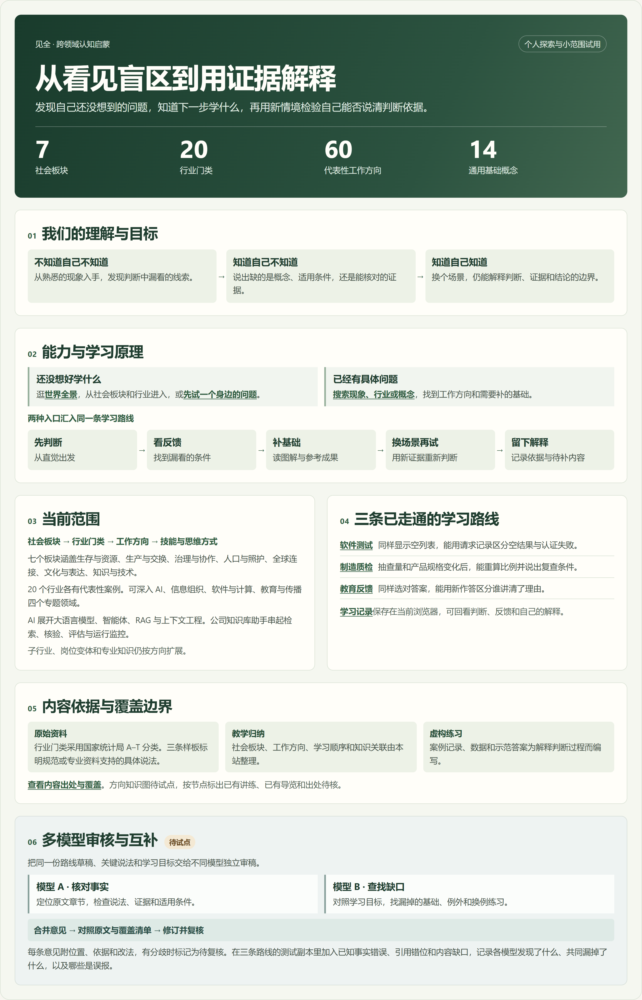
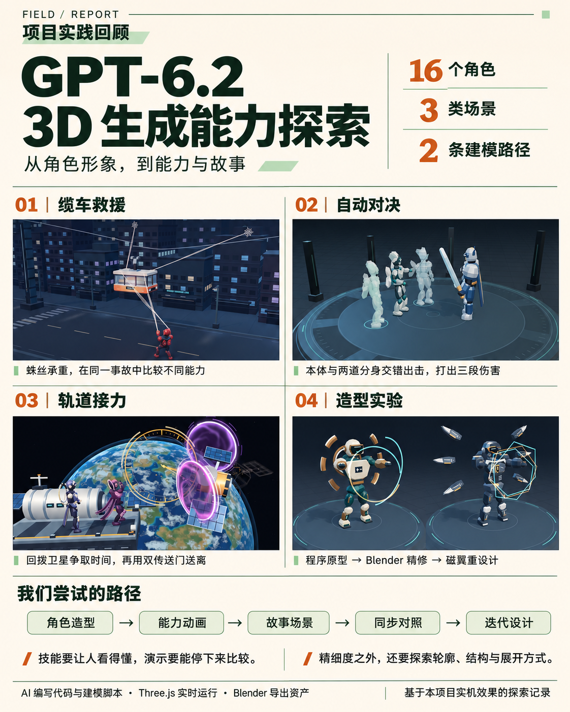
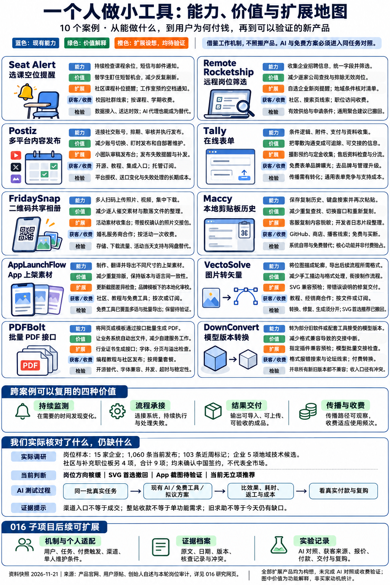
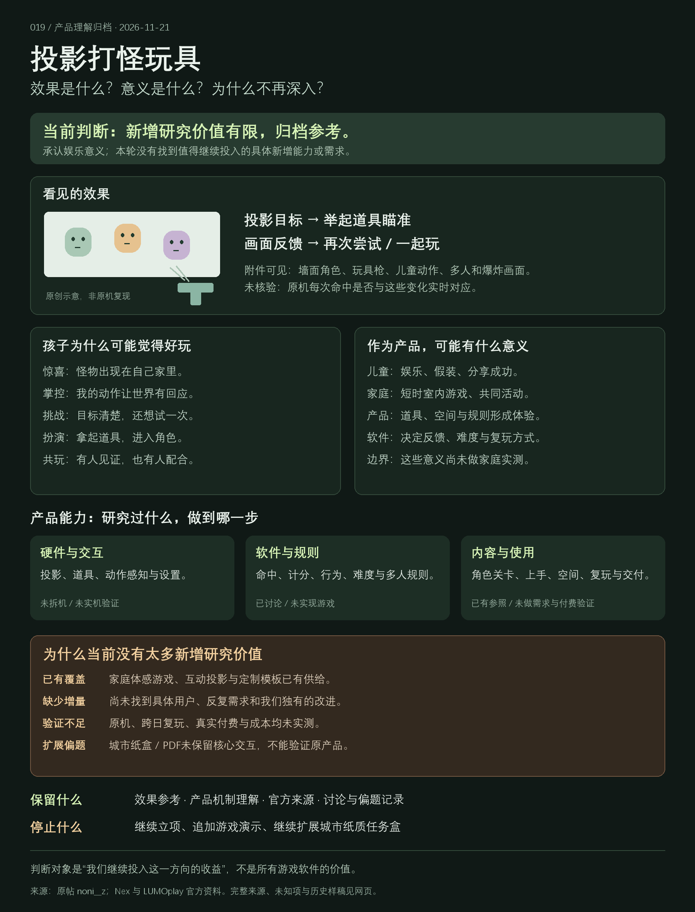

从源项目与真实问题理解机制，记录研究目标、可操作的复现与发现，再按需求迁移到自己的产品。
查看仓库与研究索引| 编号 | 研究项目 | 能力与价值摘要 | 演示 |
|---|---|---|---|
| 001 | 交互效果实验室 | 16 个交互参考与五步家具体验，研究材质、展示和业务交互的组合。 | 进入 ↗ |
| 002 | 电梯叙事与工具能力 | 角色乘电梯逐层导览，连接共享时间轴、互动与短片输出。 | 进入 ↗ |
| 003 | 风吹信封与付费前检查 | 三组原片比较提示与首尾帧，提炼付费前叠帧检查和局部合成。 | 进入 ↗ |
| 004 | Tesseract 的能力与价值 | 用可编辑工程组织剪辑、二维图层、三维场景与讲解成片。 | 进入 ↗ |
| 005 | 见全 · 跨领域认知导航 | 从全景与问题进入行业、基础与学习路线，连接图解和练习。 | 进入 ↗ |
| 006 | 六个优秀产品研究 | 从六个产品效果理解规则、数据与风格，保留演示与复用边界。 | 进入 ↗ |
| 007 | 个人网页 3D 效果合集 | 37 项网页 3D 效果，服务选型、共享引擎和动态人物重打光研究。 | 进入 ↗ |
| 008 | 16 个链接的能力与价值 | 15 条原帖加 1 个有声剪辑补充，解析生图、短片、3D、Agent 与知识库，展示实测产物。 | 进入 ↗ |
| 009 | GPT-6.2 的 3D 生成探索 | 把自然语言需求转成可编辑的角色、动作、特效与故事场景，研究原型制作、视觉讲解和跨场景复用价值。 | 进入 ↗ |
| 010 | 未来社会叙事与 AI 价值 | 从人物小事观察五年、十年后的社会，以五个 3D 原型、同幕对照、约束模拟与 MiniMax 配音研究协调、资源与劳动记录，保留情景假设和观众理解的验证范围。 | 进入 |
| 011 | 云隙行 · 3D 骑行世界 | 从鹈鹕骑车测试到可游历的修仙世界。用程序化天路、轮脚同步、自动引路和完整界面实录研究场景、动作与验证方法的复用价值。 | 进入 |
| 012 | 暮色之堡与知识世界探索 | 实现第一人称渡湖、入堡与螺旋登塔，沉淀可复用的场景和连续漫游基础。研究如何把科普、历史、音乐与农业融入世界，知识模型与学习成效继续验证。 | 进入 |
| 013 | 视差窗口与微缩交互研究 | 用 11 个场景研究摄像头视点、空间出框、实时信息、双机位叙事与齿轮修复，沉淀可复用的投影、状态和反馈能力，真实使用与长期收益继续验证。 | 进入 |
| 014 | 五款游戏的玩法、美术与设计取舍 | 对照五款原作的玩法、美术与持续动机，整理五条设计方向。结合样片反馈，沉淀核心体验选型、美术投入取舍与先验证乐趣再扩系统的方法，供后续设计回查；扩展提案尚未验证。 | 进入 ↗ |
| 015 | 《蜀道难》第一人称诗境研究 | 在连续可走的九幕 3D 蜀道中，将诗句、地形、双音色导览和镜头对齐，让读者能定位景物、追溯模型依据。 | 进入 |
| 016 | 小工具商业机制与个人 AI 协作研究 | 10 个工具的能力、获客与收费，20 种扩展设想，15 家企业岗位抽样及 AI 替代核对；帮助个人理解价值、减少误投，并用样例与反馈形成协作目标。当前无立项推荐。 | 进入 |
| 018 | 潮光 · 游戏 Skill 能力与价值研究 | 两轮采用：八项选型、六项通用建议与四项实际工具，覆盖模型、特效、音效和海面；保留完整游戏、配方、来源与证据，区分新增玩法和 Skill 贡献，效率与返工增益尚未证实。 | 研究与效果 |
| 019 | 投影打怪玩具：效果、意义与研究判断 | 归档投影效果、童趣、产品能力与家庭意义，保留城市扩展及偏题纸样。当前新增研究价值有限，停止继续探索；原机、复玩与付费未实测。 | 阅读 |
| 020 | 知识库与客服业务闭环研究 | 研究知识库怎样支撑可信回答、按需分析和客服跟进。以共享证据、模型路由、统一交流、规则确认与人工闭环构成架构，用包裹延迟原型和30项能力对照说明实现边界；双模型与真实收益待试点验证。 | 研究与演示 |



核心研究 Tesseract 的剪辑、二维动画、三维场景和音轨能力，以及对讲解制作和后续修改的价值。四部成片验证本机制作、路径追踪与 MiniMax 配音交付。
保留原有研究引导图、十二类能力、工具分工、可下载工程和发动机交互。明确区分已实测、官方支持与待验证，复用省时和真实教学收益继续测量。



整理 Adam Chernick 个人制作并基于开源示例扩展的 37 项网页实验，覆盖折叠、液态金属、布料、产品拆解、反射、3DGS / 4DGS 和交互科普。
沿用已有引导图，保留逐项原版入口、原理与应用参考。价值在效果选型、共享引擎与动态人物重打光，源码改造、产品化、多设备评估和后续作品继续按需求扩展。







从八项选型与六项通用建议，走到四项实际工具：低模 CSG/AO、24 帧特效、材质音效与动态海面。完整三章游戏、版本滑块、模型旋转、逐帧查看、试听与实录可体验。
保留生成配方、固定来源、验证与运行代价；确认资源与代码复用。Q 和产品功能另行归属，同模型独立 A/B 尚未运行，效率、返工与玩家偏好增益未证实。引导图沿用已生成的原图。